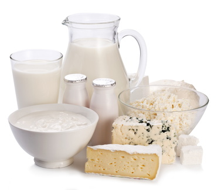

Vous avez sûrement autour de vous un certain nombre de personnes qui ont arrêté de consommer du lait, voire tous les produits laitiers, et qui ont vu leur état de santé s’améliorer! Vous vous posez peut-être la question vous-même : êtes-vous intolérant au lactose ?
Le lactose est le sucre du lait. Son assimilation se réalise au niveau de l'intestin grêle grâce à une enzyme la lactase, qui scinde le lactose en 2 sucres simples : glucose et galactose. Certaines personnes ne produisent génétiquement pas ou peu cette lactase, c’est le cas des Asiatiques et des Sud-Américains. Chez d’autres sa production diminue avec l’âge, elle peut aussi diminuer (de façon réversible) avec la consommation de lait.
Sans lactase, le lactose passe tel quel dans le côlon. Il est alors digéré par les bactéries de la flore intestinale, ce qui produit des acides gras à chaînes courtes et différents gaz, provoquant des troubles gastro-intestinaux : douleurs abdominales, ballonnements, gaz malodorants, diarrhée ou constipation.
L’intolérance au lactose est donc l’ensemble des troubles digestifs dus à une moindre présence ou à une moindre activité de cette enzyme.
On estime de 20 à 70 % la proportion des adultes touchés par l’intolérance au lactose, cela concerne aussi bien les hommes que les femmes.
Est-ce grave ?
Bien qu’extrêmement gênante en raison des symptômes digestifs qu’elle entraîne, l’intolérance au lactose n’est pas grave ni invalidante en soi. Rien à voir avec une allergie où la réaction est rapide et peut-être sévère (urticaire, rhinite ou œdème de Quincke au maximum). Rien à voir non plus avec une intolérance aux protéines du lait, les symptômes sont alors insidieux et extra-digestifs.
Chez les enfants et les nourrissons, elle peut être très difficile à diagnostiquer puis à gérer.
L’exclusion de tous les produits laitiers peut par contre entraîner une carence en certains nutriments essentiels comme le calcium, indispensable en période de croissance chez l'enfant et dans la consolidation osseuse chez l'adulte, plus particulièrement chez la femme ménopausée.
Alors que peut-on manger si on est intolérant au lactose ?
Le régime doit être adapté en fonction de la tolérance au lactose restante. Une petite quantité de lactose est en général souhaitée (12 g de lactose soit 250 ml de lait) afin de stimuler la fonction lactasique restante.
Pour trouver le seuil, le site de l’assurance maladie propose une approche en 3 phases:
Existe-t-il des produits sans lactose ?
Ces dix dernières années, les produits destinés aux intolérants au lactose se sont multipliés. Vous trouverez aujourd'hui du lait (Matin Léger), des crèmes, yaourts et fromages sans lactose relativement facilement. Ils contiennent autant de calcium que les produits laitiers ordinaires. Les prix sont certes plus élevés, mais ils se démocratisent, regardez bien les étiquettes.
Que penser des substituts à base de soja ? Couvrent-ils les apports en calcium ?
Les produits à base de soja ressemblent aux produits laitiers mais ne contiennent pas de lactose : jus de soja, yaourt au soja, crème dessert au soja…Préférez ceux enrichis en calcium, ils permettent d'atteindre les apports conseillés sans trop de difficulté.
Les apports journaliers quotidiens conseillés en calcium varient selon l'âge et les circonstances. En France on recommande en règle générale 900 mg de calcium par jour pour les adultes. Pour certains groupes, 1200 mg par jour sont nécessaires :
Pour s'assurer une quantité correcte de calcium, il faut manger 3 parts de produits laitiers par jour. Une part correspond à peu près à 30 g de fromage à pâte dure, un verre de lait de 250 ml ou deux yaourts.
Existe-il d’autres aliments riches en calcium ?
Même si la principale source de calcium se trouve dans le lait et les produits laitiers, si vous êtes intolérant au lactose il est conseillé de manger:
N'oubliez pas non plus les eaux minérales riches en calcium type Contrex ou Hépar.
Et les protéines ?
Les produits laitiers sont une très bonne source de protéines de bonne valeur biologique, intéressantes dans le cadre d’un régime amaigrissant ou dans la récupération du sportif. Une étude sur un petit nombre de sportifs a montré une meilleure récupération après l’effort avec l’ingestion d’une boisson lactée sans lactose. Les produits à base de soja sont riches également en protéines végétales.
Conclusion
Si vous êtes intolérant au lactose il ne faut pas supprimer tous les produits laitiers, gardez une consommation minimale tolérée, consommez des produits sans lactose et complétez les apports protéiques et calciques par des aliments à base de soja selon vos propres goûts. A vous de trouver le bon équilibre.
Bon appétit !
Dr Armelle Marcilhacy
Médecin Nutritionniste
Pour vous abonner à ma newsletter, cliquez ici
Si vous avez des commentaires, des questions ou souhaitez me contacter n'hésitez pas à m’écrire à docteur@marcilhacy.net